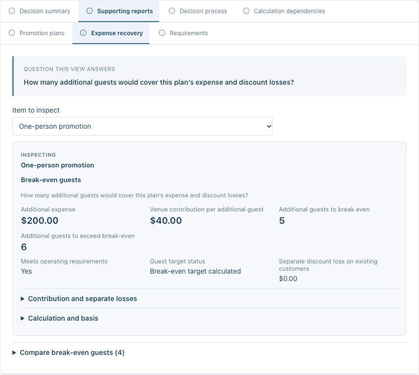
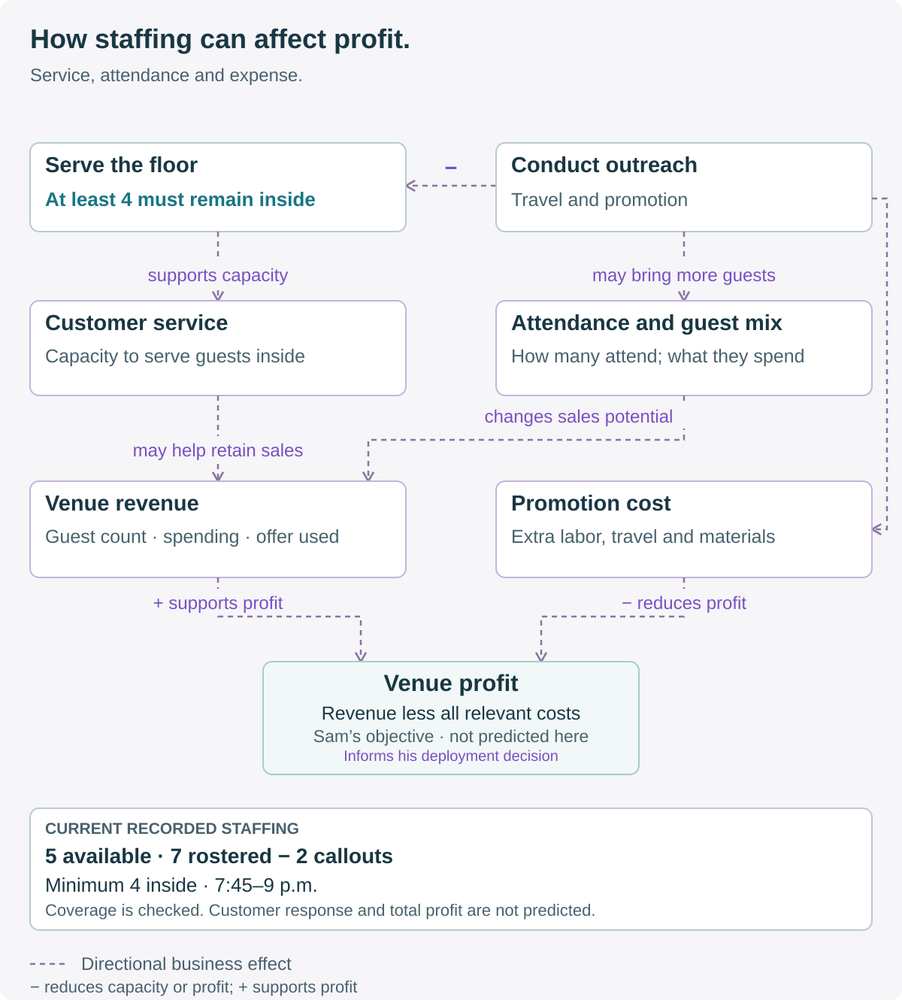
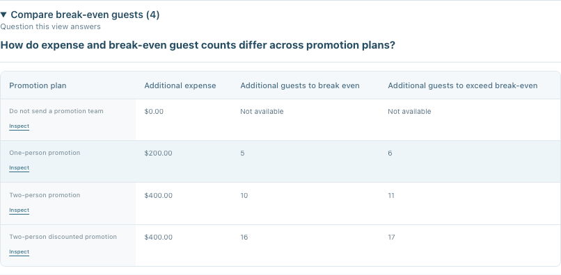

“Before we commit the next $200, what would tell us this is worth doing?” The owner wants a spending decision they can defend. Alex knows the proposed assignment and its financial hurdle. He has no measured evidence that this promotion adds enough business. Promoters also want their work assessed fairly, rather than judged by how busy the room looks.
Backing an ineffective approach wastes a limited budget. Abandoning a useful one loses an opportunity. Deciding from the busiest-looking evening risks confusing the promotion with an event, the weather or customers who would have visited anyway.
In the first article, Alex chooses the $200 assignment with five staff available. In the second, a third callout arrives before departure and only holding remains workable. Alex keeps the team inside. The calculation explains why the earlier assignment no longer fits; the story establishes no completed deployment, incurred outreach expense or customer response.
Alex, the venue and all amounts are fictional. This article looks ahead to future eligible evenings. The comparison is proposed: no trial has been completed and no marketing effect has been measured.
The earlier assessments established operating fit and a conditional financial hurdle. Alex now needs to define what evidence could support repeating the expense. He and the owner first need an agreed learning brief, followed by a study designed to answer that question.
In Marketplace, install or update Venue operations, then choose Start analysis for Plan a street-team deployment. The shared walkthrough shows the five-staff inputs used here. The calculation covers operating requirements and expense recovery; the learning study below is a proposed next step.
What would make the next $200 worthwhile?
Contribution is what the venue retains from an additional guest after the offer and relevant variable costs. Receipts passed through to other people are not venue income. The proposed one-person standard assignment costs $200; at $40 contribution per genuinely additional guest, five guests cover that expense. Six would produce a positive $40 result under those assumptions.
Here N is genuinely additional guests, m their retained contribution, C the additional deployment cost and L the separate discount loss on guests who would have attended anyway. R is the conditional change in contribution. Already committed spending is not a new deployment cost; count each cost once.
| Contribution per additional guest | Separate existing-guest discount loss | Additional guests to cover $200 | Result at 5 additional guests |
|---|---|---|---|
| $40 | $0 | 5 | $0 |
| $25 | $0 | 8 | −$75 |
The second row is an illustrative assumption change, not a new approved offer. The supplied workflow fixes each assignment’s deployment charge; contribution and separate discount loss are calculation inputs. A different charge requires an updated authored definition. A financial change also needs Alex’s reconsideration, even if the staffing still passes.
The Decision summary exposes each deployment’s operating fit and guest hurdle together. To examine what creates the hurdle, Alex opens Supporting reports → Expense recovery, beside Break-even assumptions → Contribution and discount loss in the input panel. The form uses USD cents—4,000 means $40—while the report displays dollars. The screenshot retains that original contribution and zero separate discount loss; it does not apply the illustrative $25 row or measure a promotion’s return.


Outreach may bring people in, but it also uses staff who could serve customers inside. Attendance, spending and offer use influence revenue. Missed sales from reduced service have not been estimated. The formula therefore does not calculate total venue profit.


Alex’s next task is to identify which unknowns could change the next spending decision. More admissions records may describe the evening without establishing what the promotion added. How Much Uncertainty Is Left? examines what an observation can resolve and why its timing matters. Here, the practical question is what evidence would justify repeating, changing or stopping the $200 deployment.
Five credited admissions would leave the question open.
An offer code can identify an attributed admission. It cannot reveal whether that guest would have visited without the deployment, arrived through another channel or brought friends who used a different code.
| Record | What it helps establish | What remains unknown |
|---|---|---|
| Promoter code at admission | The admission was attributed to that code. | Would the guest have visited anyway? |
| Venue income and variable costs | Contribution retained during the period. | How much did the deployment change that contribution? |
| Crew, timing, offer and expense | What was delivered and what it cost. | Was repeating it better than making no additional push? |
Alex keeps agreed promoter-credit arrangements separate from the evaluation. People can deliver their assigned work correctly while the promotion fails to create enough additional business. The records should recognize their work and support an honest spending decision.
Choose the spending question before designing the study.
Alex could compare code totals, repeat a busy night or try several locations and offers at once. Those approaches give him activity to report, but competing explanations for the financial difference remain.
He narrows the question: On comparable eligible evenings, does the one-person standard promotion improve retained contribution enough to justify its additional $200 expense? The comparison is no additional street-team push, with ordinary venue activity continuing under a defined baseline.
For this first question, the team proposes holding the offer, location and deployment window fixed. Different locations and deeper discounts become later questions. Trying everything at once would make the first result harder to interpret.
The venue’s profit goal leads to a spending decision. That decision exposes an uncertain claim about additional contribution, which in turn raises smaller questions about eligible evenings, assignment, measurement and interpretation. Each question must serve the proposed comparison; several still need an agreed answer.

Give the owner a learning brief they can decide on.
Alex and the owner agree what the learning must inform. They have not yet approved an experimental protocol or a total study budget.
| Element | Agreed direction |
|---|---|
| Spending decision | Whether to repeat the $200 one-person standard deployment. |
| Comparison | The proposed promotion versus no additional street-team push on eligible evenings. |
| Business measure | The difference in retained venue contribution between conditions, after the additional deployment expense. |
| Operating boundaries | Required coverage, applicable access, useful timing and specific spending authority must hold. |
| Records needed | The assigned condition, what actually happened, costs and consistently defined contribution in both conditions. |
| Design still required | Assignment method, suitable comparison periods, study duration, total budget and analysis and review criteria. |
The next task is a design the owner can trust. Comparable evenings, fair assignment and enough information matter. A small budget might support only an inconclusive result. Alex should understand that possibility before asking the owner to fund the study.
The reusable approach is to name the next commitment, identify what is uncertain and specify evidence that could change the choice. The proposed comparison keeps promotion and a defined baseline distinct; assignment, measurement and analysis will determine what its findings can establish. That is the question emphasized by assessment patterns: what conclusion can this evaluation support? Here the team has specified a business question. It has yet to establish an experimental method or calculate whether a particular study is worth its cost.
Keep the actual evening connected to the comparison.
For each future eligible evening, Alex needs current staffing, access, timing and spending records. He can apply those inputs and recalculate the workable deployments and financial hurdle. The venue’s operating records must separately retain the chosen assignment and its actual authorization. The learning records add what happened: the offer used, hours worked, expenses and measured contribution.
If an evening is assigned to promotion and that deployment is then cancelled, the original assignment and cancellation reason must stay visible. It does not become a baseline evening merely because the crew stayed inside. The study’s approved analysis must address that difference between assignment and delivery.
The working promotion app supplies no experimental assignment or causal-effect estimate. Test-and-learn consulting can turn the agreed brief into a credible design and interpret what the resulting evidence permits the owner to conclude.
Alex leaves with a useful agreement.
The owner knows which future expense is under review. Alex knows the comparison and business measure the next proposal must address. Promoters have a clear distinction between credit for delivered work and evidence that an approach deserves more funding.
They have settled what to learn before committing to how to learn it. The next stage is to design and approve the comparison. Once reviewed evidence exists, they can consider continuing, changing or stopping the promotion—or acknowledge an inconclusive result. A winner has not been established.
Future reviewed evidence would return to the larger decision alongside a fresh operating review and a specific authorization. Learning about customer response would inform Alex’s spending judgment; coverage, access and timing would still need to hold for the next deployment.
Open the working analysis and enter Alex’s five-staff situation. It shows the operating basis and financial hurdle. The learning brief remains a proposal outside the current app’s experimental capabilities.
Reference: how other assumptions change the hurdle.
The $200 commitment is the immediate learning question. This broader sensitivity comparison shows why the answer cannot be transferred unchanged to another offer or deployment. Return to the original five-staff case for context: both $400 two-person assignments remain blocked by insufficient floor coverage. Their financial thresholds do not make them workable.
The final column holds response at ten genuinely additional guests. This comparison point is not an attendance prediction. The last two rows combine changes from the $400 reference.
| Variable | Explanation |
|---|---|
| C | Additional deployment cost. |
| m | Retained contribution per genuinely additional guest. |
| L | Separate discount loss on guests who would have attended anyway. |
| Ncover | Whole additional guests needed to cover cost and discount loss. |
| R(10) | Conditional contribution result at ten genuinely additional guests. |
| Scenario | C | m | L | Ncover | R(10) |
|---|---|---|---|---|---|
| Reference | $400 | $40 | $0 | 10 | $0 |
| Lower deployment cost | $200 | $40 | $0 | 5 | +$200 |
| Lower contribution | $400 | $25 | $0 | 16 | −$150 |
| Loss on existing guests | $400 | $40 | $50 | 12 | −$50 |
| Lower cost and contribution | $200 | $25 | $0 | 8 | +$50 |
| Lower contribution plus loss | $400 | $25 | $50 | 18 | −$200 |
Divide C + L by positive contribution per guest, m, rounding any fractional result up to a whole person. An extra $50 loss on existing guests raises the $400 standard-offer hurdle from ten to twelve whole additional guests at $40 contribution. Count each cost once. These are conditional comparisons; the workflow release fixes the price of each supplied assignment.
In the report panel, choose Supporting reports → Expense recovery → Compare break-even guests to inspect the four supplied deployments. The compact comparison shows their additional expense and the thresholds to cover and exceed it. The supporting answer retains the qualification when an inspected assignment is blocked. Returning to the Decision summary restores the compact operating comparison; it does not turn any threshold into an attendance prediction.
See the four-deployment financial comparison


Inspection makes no commitment. Comparing an assignment changes what Alex is inspecting. Choosing and authorizing the assignment remain part of the venue’s actual operating process. A threshold describes required response; it supplies no evidence that the response will occur.
Recognize the structure in another decision.
Follow a shared problem or assessment into a different business context. Each example keeps its own requirements, records and conclusion limits.
-
Shared problem family / Staff allocation
Repair a roster without uncovering another service.
Elena’s restaurant uses the same staff-allocation problem family. Moving a cook can close one gap while creating another, so each candidate covers the whole remaining roster.
-
A further learning question / Information-value assessment
See an implemented assessment of information value.
Alex’s learning article specifies a proposed study brief. The Python shipment example goes further: supplied estimates, check costs and feasible responses support a calculated comparison with acting now.